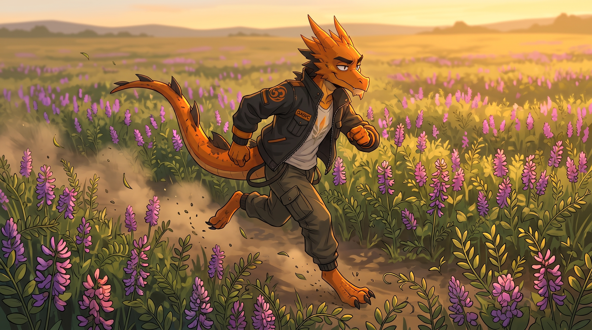
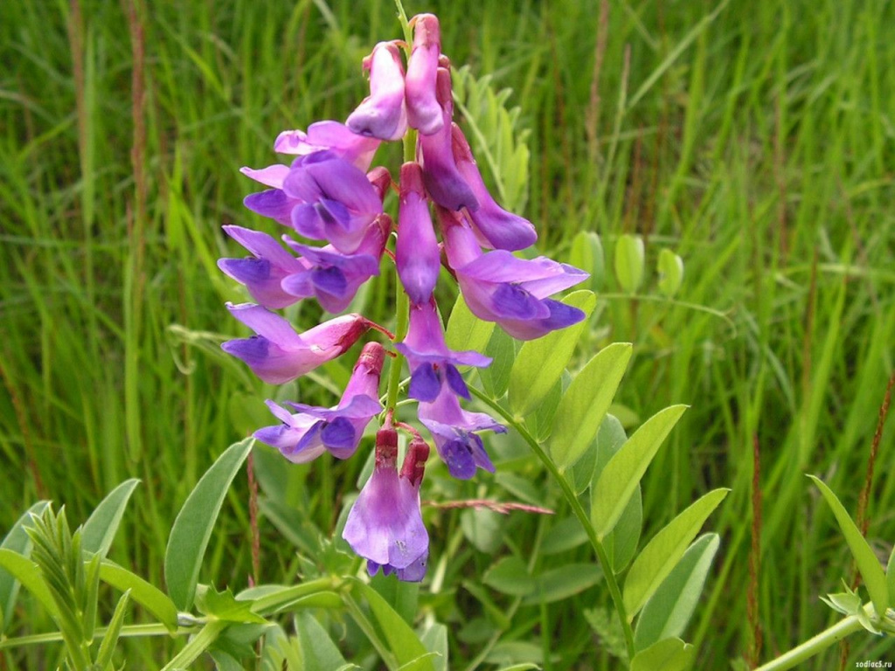
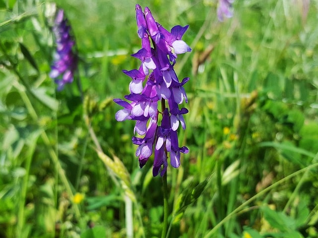

СЕЛЕКЦИОННАЯ ПРОГРАММА
"ОЗИМАЯ ВИКА"
Описание программы "Озимая вика"
Вика относится к числу наиболее ценных кормовых культур. Среди однолетних бобовых трав особое положение занимает озимая вика, которая вносит существенный вклад в формирование устойчивой кормовой базы для животноводства. Она широко используется для заготовки высококачественного сена, сенажа и силоса, служит незаменимым компонентом зелёного конвейера. Сухая вегетативная масса её в укосной спелости содержит до 24% протеина. Переваримость белка достигает 83%, а клетчатки — 49%.

Направления селекции:
- Увеличение урожайности
- Адаптивность к внешним факторам среды
- Короткостебельность
- Повышенное содержание протеина
- Снижение содержания алкалоидов
